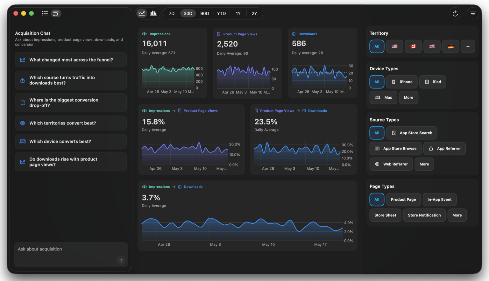
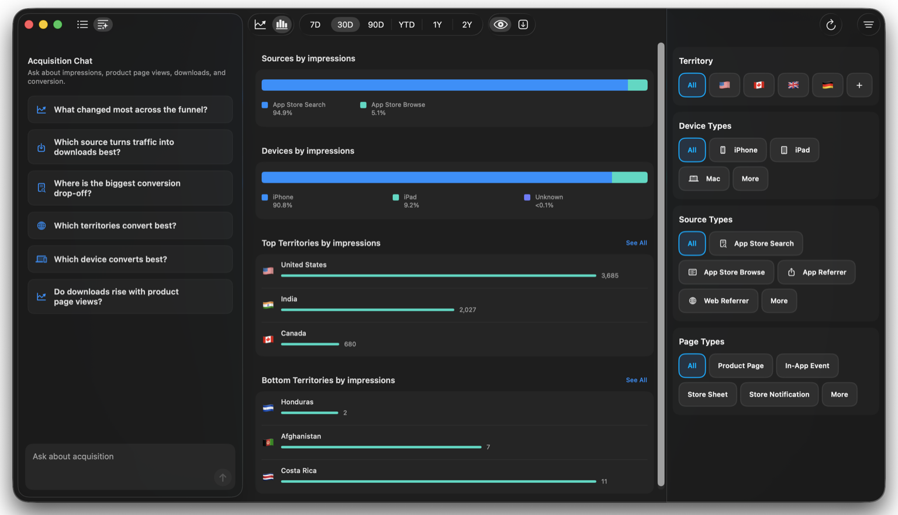
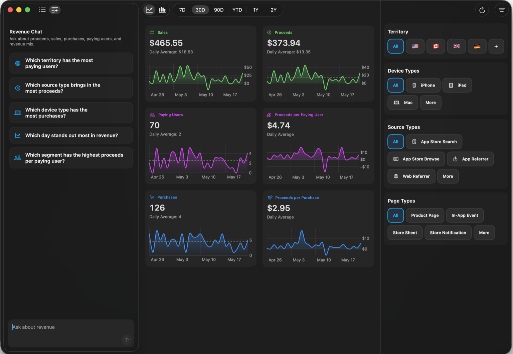
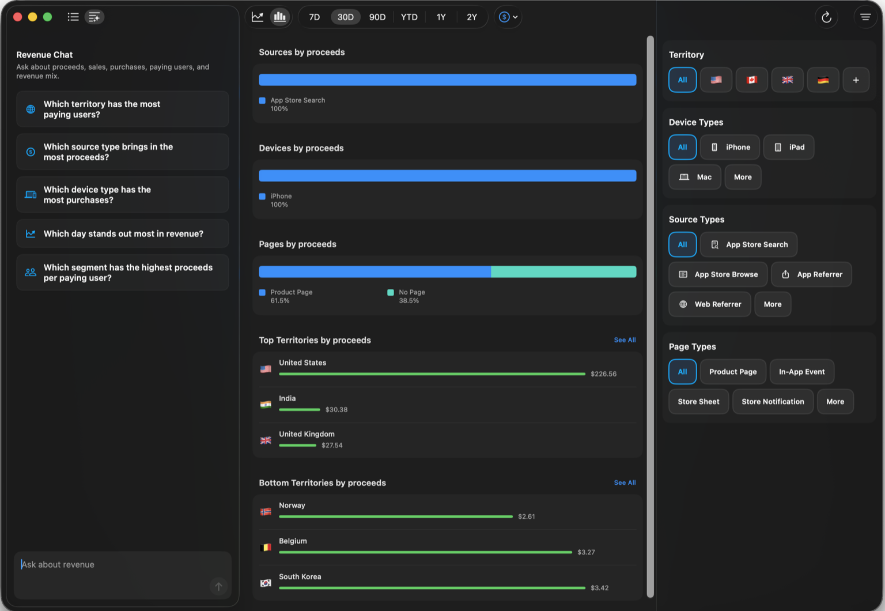

Acquisition Workspace
See how App Store traffic becomes downloads.
Pair reviews with acquisition analytics for impressions, product page views, downloads, conversion, sources, territories, devices, and page types.

An AI-native workspace for your apps.
Acquisition Workspace
Pair reviews with acquisition analytics for impressions, product page views, downloads, conversion, sources, territories, devices, and page types.

Acquisition Chat
Ask what changed most, which source converts, where users drop off, and which territories or devices turn attention into downloads.
Funnel metrics
Follow the top-level acquisition path from App Store impression to product page view to download, with conversion rates in the same workspace.
Breakdowns
See where impressions come from, how device mix changes, and which territories are strongest or weakest in one acquisition view.

Acquisition filters
Filter by territory, device type, source type, and page type, then use the same context across charts and Acquisition Chat.
Revenue Workspace
Track proceeds, sales, purchases, paying users, and revenue mix.

Revenue Chat
Ask which territories, source types, devices, days, or segments stand out across proceeds, sales, purchases, paying users, and revenue mix.
Revenue metrics
Watch sales, proceeds, paying users, purchases, and per-user or per-purchase revenue move together in one filtered workspace.
Breakdowns
See which sources, devices, page types, and territories contribute the most proceeds, then compare the strongest and weakest segments.

Revenue filters
Filter revenue by territory, device type, source type, and page type, then use that context across charts, breakdowns, and Revenue Chat.
Reviews Workspace
See Chat, response drafting, translations, and filters in one focused App Store Connect workflow. Scroll to spotlight each part of the same workspace.

Chat
Chat turns your customer reviews into answers about what users love, recurring complaints, sentiment changes, and feature requests.
Generated responses
Generate a response in context, adjust the tone and length, then send it without losing sight of the review, rating, version, or territory.
Translations
Keep the original text nearby while viewing translated reviews and translated response previews for international feedback.
Filters
Narrow the workspace to the reviews that matter, then pair the filtered list with the response and chat workflows beside it.
Metrics
Switch into metrics to see rating trends, review volume, and distribution in the same filtered workspace.

Request removal
When a review should be escalated, collect the review details and draft a concise request for App Store review moderation.

Pricing
Subscriptions are available only through Apple within the iOS and macOS apps.
Included for every account.
50 monthly credits
More monthly intelligence capacity.
500 monthly credits
Answers to common questions about subscriptions, credits, credentials, and Apple account management.
Subscriptions are managed through Apple inside the iOS and macOS apps.
Free includes 50 monthly intelligence credits.
Pro includes 500 monthly intelligence credits for Review Chat, Revenue Chat, Acquisition Chat, drafting, and translation workflows.
App Store Connect credentials are stored securely in the Keychain and used only to connect to App Store Connect.
No. Insights uses Apple-provided APIs but is not affiliated with or endorsed by Apple.
Yes. Subscriptions are managed through your Apple account.